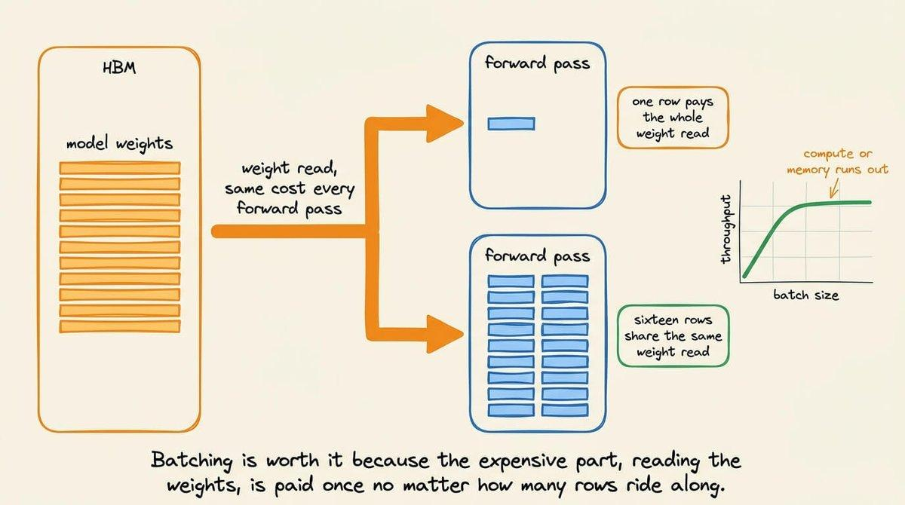
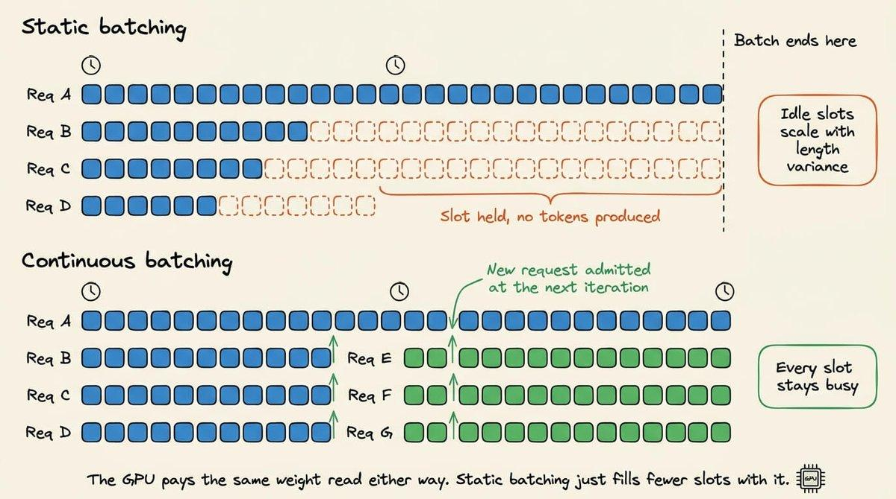
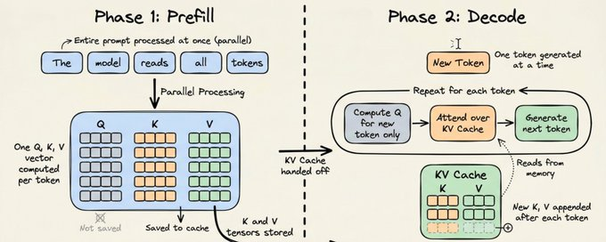
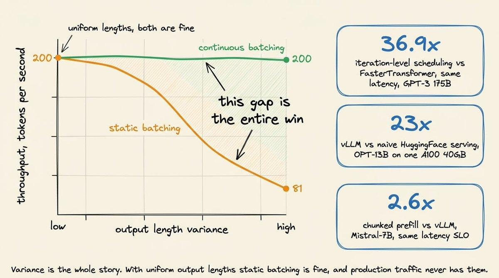

图↔注并排核对（连续批处理深度详解）
共 18 张正文图，按原文 DOM 顺序；每张卡片给出「当前中文图注」与「原文图注」对照，请逐张核对。
第 1 张 · 文件 fig01.jpg · 小节「为什么需要连续批处理」· 锚点段 2

当前图注：图 1：长度不一的文本被补齐到同一宽度，从而堆叠成一个 batch 张量，每行对应一个标签
原文图注：Variable length texts padded to a common width so they stack into one batch tensor, with one label per row.
第 2 张 · 文件 fig02.jpg · 小节「为什么需要连续批处理」· 锚点段 3

当前图注：图 2：传统机器学习的 batch 是一个补齐矩阵，所有行同时结束；LLM 解码的 batch 则是一组在不同时刻停止的请求
原文图注：A traditional ML batch is a padded matrix where every row finishes together, while an LLM decode batch is a set of requests that stop at different times.
第 3 张 · 文件 fig03.jpg · 小节「为什么需要连续批处理」· 锚点段 5

当前图注：图 3：连续批处理的全过程：请求排队进入，每个请求每轮生成一个 token，完成的请求离开、新请求加入 batch，GPU 因此保持满载
原文图注：(原文无图注) Continuous Batching / Requests Queued / Generate One Token per Request / New Request Joins Batch
第 4 张 · 文件 fig04.png · 小节「为什么需要连续批处理」· 锚点段 6

当前图注：图 4：批处理的时间线：横轴是轮次，每一行是一个请求；浅色方块是提示词 token，深色方块是生成 token，END 表示该序列结束
原文图注：(原文无图注) 槽位时间线：Prompt token / Generated token / End of sequence token，T1..T8
第 5 张 · 文件 fig05.jpg · 小节「传统机器学习推理里的调度」· 锚点段 1

当前图注：图 5：批处理之所以划算，是因为从 HBM 读取权重这件事只付一次，无论有多少行搭同一趟车
原文图注：Batching pays for itself because the weight read from HBM costs the same whether one row or sixteen ride along.
第 6 张 · 文件 fig06.jpg · 小节「LLM 推理的性质」· 锚点段 1

当前图注：图 6：静态批处理 vs 连续批处理：静态情形下槽位空转，连续情形下槽位在下一轮迭代就被新请求补上
原文图注：Static batching vs continuous batching: idle slots in the static case, immediate slot refill in the continuous case.
第 7 张 · 文件 fig07.jpg · 小节「解法：迭代级调度与选择性批处理」· 锚点段 0

当前图注：图 7：迭代级调度：连续三轮前向传播里，batch 的成员在不断变化
原文图注：Iteration-level scheduling: batch composition changing across three consecutive forward passes.
第 8 张 · 文件 fig08.png · 小节「解法：迭代级调度与选择性批处理」· 锚点段 1

当前图注：图 8：迭代边界上的替换：一条序列结束后离开，等待中的请求在同一个边界进入并接管它的位置
原文图注：(原文无图注，与图 4 为同一张图) 槽位时间线：Prompt token / Generated token / End of sequence token
第 9 张 · 文件 fig09.jpg · 小节「解法：迭代级调度与选择性批处理」· 锚点段 3

当前图注：图 9：除了注意力，其他算子都把一个 token 当作独立的个体，所以它们可以共用同一个 batch；注意力则只能让一个 token 读取它自己请求里的 token
原文图注：Token-wise operations transform each token on its own, while attention makes one token read many others and only from its own request.
第 10 张 · 文件 fig10.jpg · 小节「解法：迭代级调度与选择性批处理」· 锚点段 4

当前图注：图 10：选择性批处理：层归一化、QKV 投影与前馈网络跑在同一条扁平 token 流上，注意力则按请求切开、各自对着自己的 KV cache 执行，再合并回这条流
原文图注：Selective batching: layer norm, projections and feed forward run over one flat token stream, while attention splits per request against its own KV cache and merges back.
第 11 张 · 文件 fig11.png · 小节「一次调度步骤：四步讲清」· 锚点段 0

当前图注：图 11：vLLM V1 调度器：每一步在固定的 token 预算内给各请求分配 token，并输出 SchedulerOutput，图中 Step0 到 Step3 展示了三条请求每一步各拿到多少 token
原文图注：(原文无图注) vLLM V1 simple & flexible scheduler：Prompts → Token budget → Scheduler Output，Step0-Step3
第 12 张 · 文件 fig12.png · 小节「一次调度步骤：四步讲清」· 锚点段 3

当前图注：图 12：prefill 与 decode 两个阶段：prefill 一次并行处理整段提示词，decode 每次只生成一个 token，并反复读取 KV cache
原文图注：(原文无图注) Phase 1: Prefill（整段提示词一次并行处理）/ Phase 2: Decode（每次一个 token，反复读 KV cache）
第 13 张 · 文件 fig13.jpg · 小节「一次调度步骤：四步讲清」· 锚点段 5

当前图注：图 13：调度 token 直到「已算 token 数」追上「目标 token 数」：decode 是 1 个 token，prefill 一次给整段提示词，分块 prefill 与命中前缀缓存则各给一部分
原文图注：Schedule tokens until computed tokens and target tokens match, for decode, prefill, chunked prefill, and prefix cache hits.
第 14 张 · 文件 fig14.jpg · 小节「一次调度步骤：四步讲清」· 锚点段 8

当前图注：图 14：一次调度步骤的全貌：从队列出发，经过 token 预算、KV 分配，到 SchedulerOutput
原文图注：Anatomy of one scheduling step, from the queues through token budget and KV allocation to SchedulerOutput.
第 15 张 · 文件 fig15.jpg · 小节「Token 预算同时决定延迟与吞吐」· 锚点段 2

当前图注：图 15：token 预算的交易：短步骤换来更紧的 token 间延迟，长步骤换来 GPU 饱和；而 max_num_seqs 与 max_num_batched_tokens 都在争抢同一个 KV cache 池
原文图注：The token budget trade, short steps for tight inter-token latency against long steps for GPU saturation, and the settings competing for one KV pool.
第 16 张 · 文件 fig16.jpg · 小节「抢占：为什么同一段 prefill 要算两遍」· 锚点段 0

当前图注：图 16：KV 压力下的抢占：释放块、把已算 token 数归零、请求回到等待队列最前面
原文图注：Preemption under KV pressure: blocks freed, computed tokens reset to zero, request back at the front of the waiting queue.
第 17 张 · 文件 fig17.jpg · 小节「抢占：为什么同一段 prefill 要算两遍」· 锚点段 2

当前图注：图 17：抢占与重算的循环让同一段 prefill 被反复付账，以及打破这个循环的三个设置
原文图注：The preempt and recompute cycle paying for the same prefill repeatedly, and the three settings that break the loop.
第 18 张 · 文件 fig18.jpg · 小节「收尾：先看调度器，再看模型」· 锚点段 1

当前图注：图 18：静态批处理的吞吐随输出长度方差扩大而崩塌，连续批处理则保持稳定，图中给出了 23 倍这个头条结果
原文图注：Static batching throughput collapsing as output length variance rises while continuous batching holds steady, with the headline results.